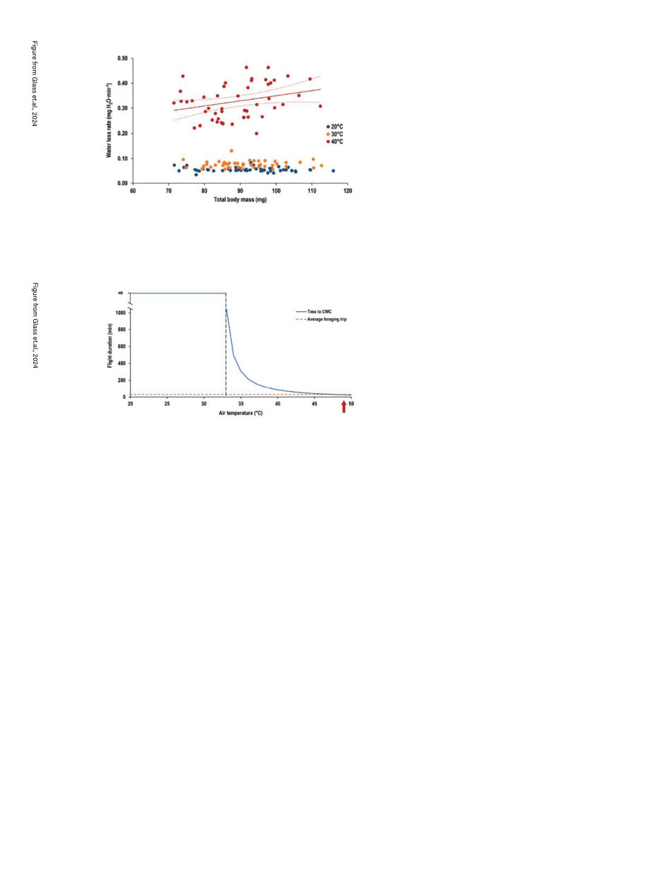

American Bee Journal
1126
columns” — but apparently you can
calculate evaporative heat loss with
this data. Within two seconds of ces-
sation of flight, they then took the
bees’ flight muscle temperature and
weighed them.
The next experiments were to look at
the effect on temperature of wing mo-
tions (“kinematics”), and took place at
the beautiful campus of University of
California Davis located in the agri-
cultural countryside of northern Cali-
fornia. They collected nectar foragers
(excluding bees with loads of pollen)
and weighed them. Since the unloaded
weight of bees varies little from 70 mg
it was assumed all weight over that
was nectar cargo. These bees were
placed in a temperature-controlled
flight chamber and their flight was
analyzed with high-speed cameras.
The various experiments generally
showed little difference between bees
flying at 20 or 30 C (68 or 86 F). At 40 C
(104 F), however, wingbeat frequency
significantly decreased (i.e., they’re
“flapping” more slowly), and stroke
amplitude increased (i.e., slower, big-
ger strokes). This reduces their meta-
bolic rate (i.e., they’d feel like they’re
working less hard). Interestingly, this
did not appear to impact lift capacity.
The most significant difference, how-
ever, was that bees don’t lose much
water during flight below the mid-30s
C, but do so increasingly (and rapidly)
beyond that. Bees as you know, can’t
sweat, which we do to benefit from
evaporative cooling, but they can in-
stead regurgitate the contents of their
honey stomach over their own head to
accomplish the same thing.6
At 40 C (104 F) bees are losing a net
0.21 mg of water per minute. A honey
bee will die if its water content reaches
less than 74% of its mass,7 i.e., if it loses
18 mg of its 70 mg weight. So if a bee
in flight loses more than that amount
in flight through metabolic processes
and/or evaporation, it will die. At 40 C
(104 F) that gives them about 85 min-
utes of flight time, well in excess of the
average 30-minute foraging trip. It’s
only at 46 C (115 F) that the survivable
flight time drops below 30 minutes,
though they may find water or nectar
(which has a high water content) dur-
ing their flight which will extend their
flight time. However that’s based on
extrapolated calculations and it is not
yet known if they experience serious
health harm before reaching the point
that would kill them. I think it would
be surprising if they don’t give a very
wide margin to that limit — we our-
selves certainly aren’t going to put
ourselves in a situation nearing a few
minutes or degrees of suffering a heat-
related death, and I don’t think we
should expect bees to either.
Dr. Glass also notes that all these
experiments were conducted in low-
humidity conditions; high-humidity
air such as one might experience in
tropical parts of Australia may have
a significant effect — humidity may
eliminate the evaporative loss that is
the current limiting factor, but then
again it may also severely limit their
ability to shed metabolic heat and
overheating may become the limiting
factor. When I kept bees in the sub-
tropical Bundaberg area it was very
often 40 C (104 F) and 100% humid-
ity, which I can tell you wasn’t very
pleasant as a human and I’m very
curious how it would affect the bees.
I hope some follow-up research will
look into this specifically.
I was wondering why it seemed to
be the bees simply began flying more
efficiently at 40 C (104 F), — there sure-
ly must be a tradeoff? — and then I was
struck by this sentence by Dr Glass:
Bees flying at 25° C displayed high
wingbeat frequencies that were in-
dependent of total body mass, sug-
gesting that bees use a less efficient
kinematic strategy when flying in
cool air, perhaps to generate ad-
ditional metabolic heat and warm
themselves toward 39°C, the flight
muscle temperature associated with
maximal flight metabolic rate. 8
Of course! This was a revelation —
bees fly most efficiently at 39 C (102
F), they are known on cold days to
shiver their wing muscles to get up
to this temperature, and so when fly-
ing at less than that temperature they
are essentially flying less efficiently to
generate extra heat to reach that tem-
perature! It’s not that they suddenly
get “magically” more efficient at and
above 104 F, it’s that they’re intention-
ally flying inefficiently below that.
The research conclusions seem to
confirm my observation that bees re-
ally seem busiest and “happiest” on
days in the 90s. Water seems to be the
Fig. 2. Water loss rates of honey bees increased with nectar load at 40 °C, but not 20
or 30 °C air temperature. Total body mass is the mass of the unloaded bee plus the
nectar load it is carrying. Each point represents an individually measured bee. The
regression line and its corresponding 95% confidence limits denote a statistically sig-
nificant effect of total body mass on water loss rate.
Fig. 4. The length of time an unloaded forager (average: 70 mg) can fly at a given air
temperature before reaching critical water content (CWC) when flying in dry air (blue
line). The red dotted line represents the average foraging trip for a honey bee (30 min;
36). The red arrow denotes the upper critical thermal limit for honey bees at rest (alp-
proximately 49 °C; 38, 39).